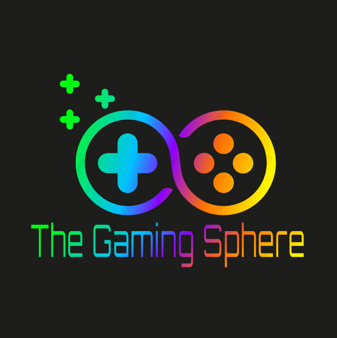
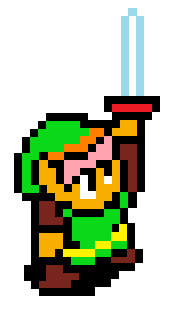
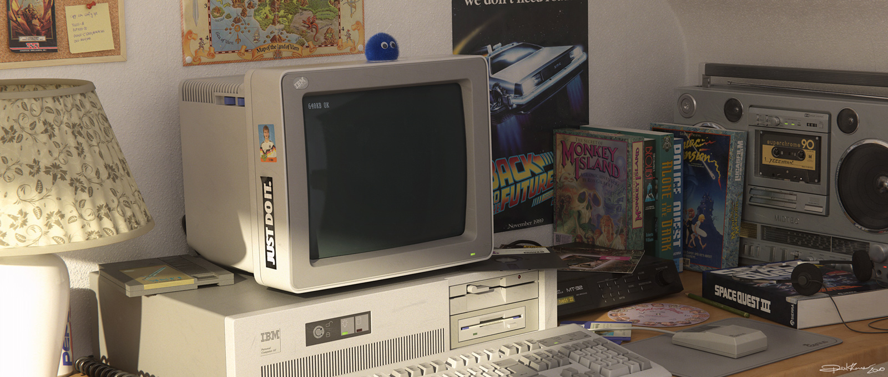

Overview
Purpose
The purpose is to inform by covering general information over a few topics related to video games. It is meant to simplify the content for easier understanding and add interest.
Audience
The website is for those interested in video games and desire to know more about the history. The audience is also anyone interested in the current state of the medium.
Branding
Website Logo
Style Guide
Color Palette
Palette URL: https://coolors.co/396e94-e7c24f-a43312-381d2a-aabd8c| Primary | Secondary | Accent 1 | Accent 2 | |
|---|---|---|---|---|
| Accent 3 | ||||
| #262E43 | #865596 | #005395 | #008DA1 | #F26230 |
Typography
Heading Font: michroma
Paragraph Font: kanit, roboto flex
Normal paragraph example
From the 2000s and beyond, gaming skyrockets in quality and quantity. Games started to branch further in genre. From life simulators like The Sims to music games like Rockband. The competition between consoles did not slow down either. Microsoft entered the field with the Xbox and later the Xbox360. Nintendo continues with the DS and the Wii. Gaming started to blend with the age of the internet, Steam helped connect more people to computer games. The mobile game trend also started with games like Angry Birds and Farmville.
Colored paragraph example
Indie games also appeared as a new genre, allowing small creators a chance. Popular examples include Minecraft, Hades, and Undertale.
Navigation
Site Map
Content
Home page
Level Up in What You Know Manchester, New Hampshire Statue of Ralph Baer, the creator of the very first gaming console called the “Brown Box” Alamogordo, New Mexico Burial place for Atari’s biggest “failure”, the E.T video game. Philadelphia, Pennsylvania Location where the IBM computer beat chess champion, Garry Kasparov, at a chess match. Dundee, Scotland A statue to pay homage to the popular “Lemmings” game from the 1990’s. Reykjavik, Iceland A monument with 100,000+ names to commemorate the popular MMO game “EVE Online” for its 10th anniversary. It’s dangerous to go alone.. Arm yourself with the knowledge to wade through the gaming world. Whether through you phone, computer, or brand name console, games have entered our lives and become commonplace. With the help of websites like this, you too can join the gaming sphere.
Images for the Home page
History
Headline: Where It Started Paragraphs: In the 1940s, world fairs encouraged millions to demonstrate their ideas and talents. This included a very rudimentary design for the first electronic game. Hardly any player could win against the machine, but it displayed the potential for future electronic endeavors. Computers could run simulations to play games like chess or tic-tac-toe, but it wasn’t until 1958 that the very first game “Pong” was invented. This game was one of few available on the first gaming console made by Ralph Baer in 1968, 10 years later! Computers remained the hub for electronic games. New computing languages made in colleges like Dartmouth or MIT aided in game creation. Most creators were still hesitant to broach the visual aspect of game creation, so games followed a style similar to “Choose Your Own Adventure” books. The 1970’s are what most associate with the beginning of the video game industry. Arcade machines and home consoles joined the roster of devices one could enjoy a video game. “Pong” got its own machine, the “Atari” brand began, and “Space Invaders” debuted during this decade. A majority of classic games were made during the 1980’s, what others might consider the golden age of gaming. “Pac-Man”, “Donkey Kong”, “Tetris”, and “Zelda” came out during this time. Nintendo joined the battle of consoles with the “NES” or “Nintendo Entertainment System” and the “Game Boy”. The era of gaming began. New games were coming out consistently along with new consoles. Sega stepped up to bat with Sonic the Hedgehog on the Genesis console along with Sony and their Playstation. Mortal Kombat enters the arcade market, Blizzard debuts with WarCraft: Orcs and Humans, and Zelda adds a new game to its franchise. From the 2000’s and beyond, gaming skyrockets in quality and quantity. Games started to branch further in genre. From life simulators like The Sims to music games like Rockband. The competition between consoles didn’t slow down either. Microsoft entered the field with the Xbox and later the Xbox360. Nintendo continues with the DS and the Wii. Gaming started to blend with the age of the internet, Steam helped connect more people to computer games. The mobile game trend also started with games like Angry Birds and Farmville. We’ve returned to the modern day. Where games like Minecraft and free-to-play mobile games create new gamers every second. Quality has expanded to compete even with movie CGI. The quantity so astronomical that it would take a lifetime to play even half of them. This is the age when gaming became as essential to culture as music and film.
Images for the Page 2
Current Status
Headline: Current Status Sideline: Whether for business or pleasure, it’s best to acquaint yourself with the current state of gaming. Paragraphs: Nintendo, Sony, and Microsoft remain the “Big 3” in terms of hardware and games. The top companies producing games are Activision Blizzard, Electronic Arts, Tencent, Roblox, and Take-Two Interactive with honorable mentions of Capcom, Sega, and Square Enix in terms of software. With the help of Steam, current games like Cyberpunk 2077 or Baldur’s Gate are able to garner attention at an exponential rate. Indie games also appeared as a new genre, allowing small creators a chance. Popular examples include Minecraft, Hades, and Undertale. Spurred on by a new piece of technology, the newest trend in gaming has been testing the limits of virtual reality. New headsets and games are coming out at a rapid pace. Meta and all those in the console war are dipping their toes into the new tech. Oculus was the frontrunner by a long shot though. Statistics: 40.75% of the world’s population would call themselves gamers. 396.2 billion (US dollars) has been made globally from the video game industry. China has the largest amount of gamers in the world with 699.6 million, almost half of their population. Side Note: These are some of the more common acronyms to understand current gaming genres: FPS - First Person Shooter MMO - Mass Multiplayer Online JRPG - Japanese Role Playing Game ARPG - Action Role Playing Game F2P - Free to Play MOBA - Muliplayer Online Battle Arena
Images for the Page 3


Wireframes
Create three wireframes for your site. One for each page and list them here
Home
[Any additional details about home that the wireframe does not make clear]
.png)
History
[Any additional details about page 2 that the wireframe does not make clear]
.png)
Current Status
[Any additional details about page 3 that the wireframe does not make clear]
.png)